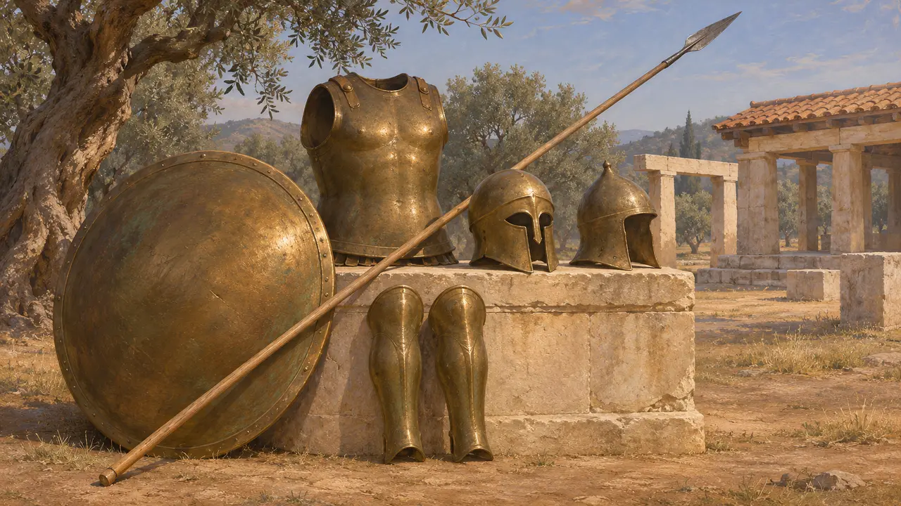
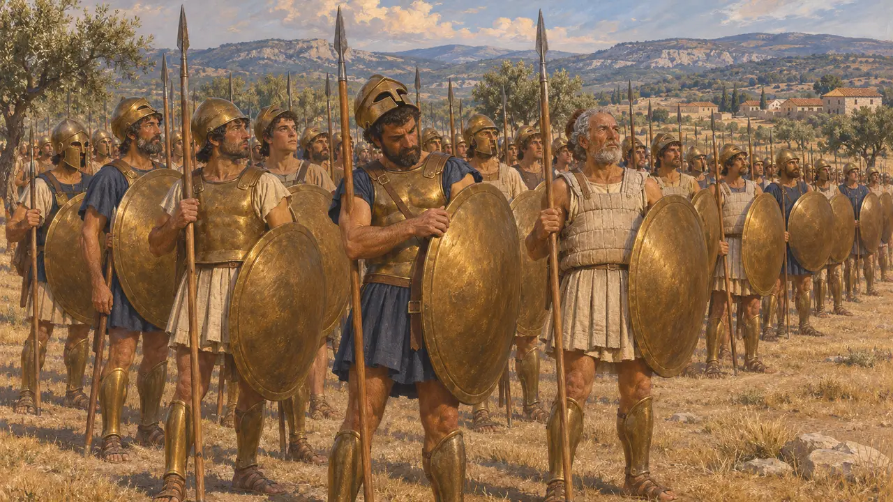
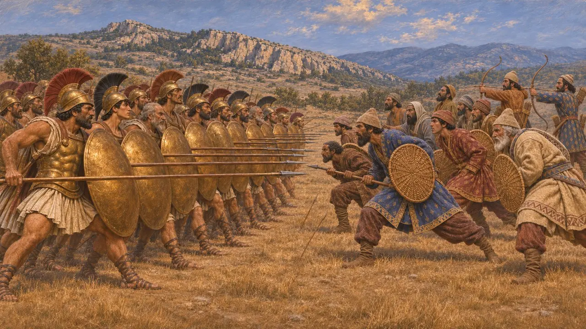
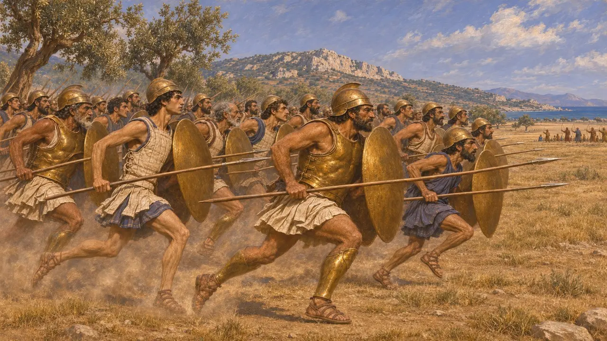
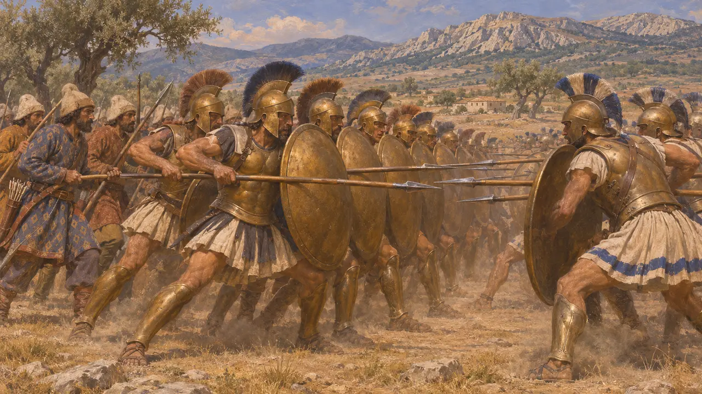

Enciclopédia › Soldados e navios

Hoplitas gregos
Lanceiros-cidadãos com armadura das cidades gregas, inimigos e súditos do Rei, 499-479 AEC
No jogo: Nível 7: Sardes em Chamas, Nível 10: Os Portões Quentes, Nível 11: O Final
Os hoplitas eram a infantaria pesada das cidades gregas: homens ricos o bastante para comprar um elmo de bronze, couraça, grevas, uma lança de estocada e um grande escudo redondo. Lutavam em fileiras cerradas. Nas guerras de 499 AEC a 479 AEC, marcharam sobre Sardes e enfrentaram os exércitos do Rei em Maratona, nas Termópilas e em Plateia. Gregos também serviram ao Rei, como fizeram os jônios antes e depois de sua revolta e os tebanos em 479 AEC.
No jogo: O jogo coloca em campo hoplitas atenienses, jônios, gregos e tebanos: uma infantaria resistente que supera os lanceiros do Rei e aguenta a cavalaria, mas pouco se protege das flechas. Em Maratona, os atenienses avançam correndo, como conta Heródoto.

Escudo, lança e bronze
Nos registrosArmas escavadas, muitas delas consagradas em Olímpia, mostram o equipamento. Ele incluía um elmo de bronze, muitas vezes do tipo coríntio fechado, grevas e uma couraça de bronze ou de linho. Incluía também uma lança com ponta de ferro de cerca de dois a dois metros e meio de comprimento e um escudo de madeira revestido de bronze, com quase um metro de diâmetro. Um elmo de Olímpia traz o nome de Milcíades, talvez o general de Maratona. Outro, de tipo oriental, apresenta uma dedicatória ateniense dizendo que foi tomado dos medos.
A. Snodgrass, Arms and Armour of the Greeks, 1967; Olympia excavation reports

Quem formava na linha
Relato antigoOs hoplitas eram cidadãos que pagavam pelo próprio equipamento, não profissionais contratados. Os cidadãos espartanos, que treinavam para a guerra em tempo integral, eram o mais próximo de uma exceção. Em Atenas, a maioria dos hoplitas vinha das classes proprietárias médias e altas. Heródoto registra 38.700 hoplitas no exército grego em Plateia, em 479 AEC. Muitos historiadores aceitam esse número como mais ou menos plausível, ao contrário de seus totais muito maiores para o lado persa.
Herodotus 9.28-30; H. van Wees, Greek Warfare: Myths and Realities, 2004

Hoplitas contra a infantaria do Rei
Relato antigoHeródoto explica as vitórias gregas sobretudo pelo equipamento e pela perícia. Nas Termópilas, diz que os persas usavam lanças mais curtas que as dos gregos. Em Plateia, diz que os persas não eram inferiores em coragem nem em força, mas combatiam sem armadura e com menos perícia, lançando-se em pequenos grupos contra uma linha formada. Registra também que as flechas persas feriram e mataram muitos espartanos enquanto estes aguardavam sacrifícios favoráveis.
Herodotus 7.211; Herodotus 9.61-63

A corrida em Maratona
DisputadoHeródoto conta que os atenienses em Maratona investiram correndo por não menos de oito estádios, cerca de 1,5 quilômetro, os primeiros gregos de que ele tinha notícia a fazê-lo. Os historiadores divergem sobre se isso era possível. Muitos acham que homens de armadura não poderiam correr tanto e ainda lutar em ordem, e que correram apenas o último trecho, ao alcance dos arcos persas. P. Krentz argumenta que o equipamento hoplita era mais leve em 490 AEC e que a corrida completa era viável.
Herodotus 6.112; P. Krentz, The Battle of Marathon, 2010

Gregos do lado do Rei
Relato antigoOs hoplitas não lutaram apenas contra a Pérsia. As cidades jônias e outras cidades gregas do leste eram súditas do Rei e forneciam homens e navios. Depois que sua revolta fracassou em Lade, em 494 AEC, voltaram a servi-lo em 480 AEC. Em 479 AEC, os tebanos e outros beócios lutaram por Mardônio em Plateia. Heródoto diz que combateram duramente contra os atenienses e perderam cerca de trezentos de seus melhores homens antes de ceder.
Herodotus 6.7-17; Herodotus 7.94; Herodotus 9.67
Fontes
- Herodotus, Histories, books 5-9
- A. Snodgrass, Arms and Armour of the Greeks, 1967
- H. van Wees, Greek Warfare: Myths and Realities, 2004
- P. Krentz, The Battle of Marathon, 2010
- V. D. Hanson, The Western Way of War, 1989